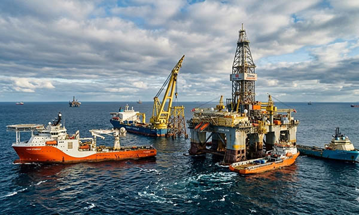

Maintenance and operations on ships and offshore installations are among the most demanding and high-risk activities in the industrial sector. In Germany, as well as in France, Italy, Switzerland, the United Kingdom, Norway, Austria, Poland, and the Benelux countries (Belgium, Netherlands, Luxembourg), maritime and offshore industries are critical for energy production, logistics, and international trade.
These environments face extreme conditions—saltwater exposure, high humidity, strong winds, heavy seas, and corrosive substances—requiring robust maintenance, precise handling, and reliable labeling to ensure safe and efficient operations.
Industrial signage, IMO-certified safety signs, engraved plastic labels, acid-resistant stainless steel plates, machine labels, pipe markers, cable markers, warning decals, type plates, industrial plates, rating plates, asset tags, QR code labels, and CE marking plates are essential tools to maintain safety, structure, and compliance.
At SignXpert, we provide high-quality, fully customizable signage and labeling solutions specifically designed for maritime and offshore operations across Germany and Europe, engineered to withstand harsh environmental conditions.
Ships & Offshore Operations: Safety and Efficiency at Sea
Maintenance and installation work on ships and offshore platforms are continuous and require meticulous planning.
Equipment and machinery operate under harsh conditions, where high salt concentrations, UV radiation, extreme temperatures, and strong mechanical stress can rapidly degrade components if not carefully monitored.
Crew members and technicians depend on precise and durable labeling to navigate complex systems such as pipelines, ventilation, electrical cabinets, fuel lines, pumps, and safety systems.
Durable signage and industrial labels help organize work areas, mark hazard zones, and provide critical instructions to reduce the risk of accidents and downtime.
In Germany and across major European maritime hubs—France, Italy, Switzerland, the UK, Norway, Austria, Poland, and the Benelux region—clear labeling supports operational efficiency and ensures that maintenance schedules and emergency procedures are executed flawlessly.
SignXpert specializes in providing labeling solutions that ensure safety and organization in these high-stakes environments.
Durable Materials: IMO Signs, Engraved Plastic, and Acid-Resistant Solutions
Marine and offshore environments demand signage and labeling that can resist corrosion, mechanical wear, saltwater, UV exposure, and extreme temperatures.
- Acid-resistant stainless steel labeling ensures long-term durability in humid and corrosive conditions without rusting or degrading.
- IMO-certified signs (International Maritime Organization) provide uniform emergency instructions, evacuation routes, and hazard warnings to meet international maritime safety standards.
- Engraved plastic signs offer clarity and durability for indoor and sheltered areas on ships or offshore platforms.
These materials allow crews to quickly identify safety instructions, pipelines, electrical systems, and technical specifications.
Durable labeling ensures that critical information remains visible, legible, and actionable in all conditions, enhancing both operational safety and workflow efficiency.
Safety and Organization: Preventing Accidents at Sea
On ships and offshore installations, safety is paramount. Clear and accurate labeling prevents accidents and ensures that personnel know precisely what to do in emergencies.
Safety labeling marks emergency exits, fire-fighting equipment, ventilation systems, hazardous zones, and critical machinery.
Engraved plastic and stainless steel plates ensure long-lasting visibility under extreme marine conditions.
Cable markers, machine labels, and warning decals streamline maintenance, help identify system components, and guide safe operation.
In Germany’s shipyards, offshore wind farms, and port facilities—as well as across France, Italy, Switzerland, the UK, Norway, Austria, Poland, and the Benelux countries—professional labeling reduces operational risks, improves workflow, and guarantees compliance with international maritime safety standards.
SignXpert solutions combine durability, clarity, and compliance, making it easier for crew members to follow instructions and maintain continuous safe operations.
Why SignXpert is the Leading Choice for Maritime and Offshore Labeling
SignXpert is a trusted supplier of high-quality signs and labeling for ships and offshore environments across Germany and Europe.
Our products include IMO-certified safety signs, engraved plastic labels, acid-resistant stainless steel plates, machine labels, pipe markers, cable markers, warning decals, industrial type plates, rating plates, asset tags, QR code labels, and CE marking plates.
Our user-friendly online system allows maritime and offshore companies to quickly design and order fully customized signage tailored to their operational needs.
Fast delivery ensures minimal downtime, while competitive pricing provides cost-effective solutions without compromising quality.
SignXpert products are engineered to withstand harsh marine and offshore conditions, including saltwater, UV radiation, extreme temperatures, and mechanical wear, guaranteeing long-term legibility and durability.
By choosing SignXpert, shipping companies, offshore operators, and port facilities in Germany, France, Italy, Switzerland, the United Kingdom, Norway, Austria, Poland, and the Benelux countries gain access to durable, reliable, and professional labeling solutions that enhance safety, improve operational efficiency, and support regulatory compliance across all maritime and offshore operations.